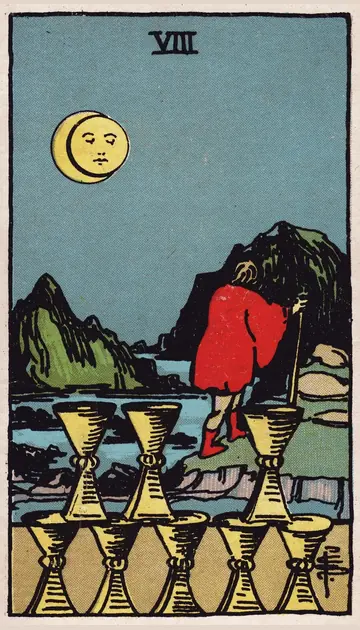

正位置カップの8の正位置
キーワード：離れる・新しい道を探す・心の変化
恋愛
今の関係から、気持ちが離れやすい時です。
相手の気持ちあなたとの関係を、見つめ直そうとしているようです。
この先心から求める関係に、近づいていきそうです。
アドバイス本当に求めているものを、自分に問いかけてみましょう。
気をつけること何も言わずに、急に離れないように。
この先心から求める関係に、近づいていきそうです。
アドバイス本当に求めているものを、自分に問いかけてみましょう。
気をつけること何も言わずに、急に離れないように。
人間関係
合わない場所から、そっと離れる時です。
相手の気持ちあなたとの距離を、少し置きたいと感じているようです。
この先自分に合う居場所が見つかりそうです。
アドバイス無理に合わせていた関係から、少し距離を置きましょう。
気をつけること関係をすべて断ち切る必要はありません。
この先自分に合う居場所が見つかりそうです。
アドバイス無理に合わせていた関係から、少し距離を置きましょう。
気をつけること関係をすべて断ち切る必要はありません。
仕事・学業
今の環境を離れ、新しい道を探す時期です。
この先新しい道で、やりがいを見つけられそうです。
アドバイス次に進みたい道を、調べ始めてみましょう。
気をつけること次の当てもなく、急に辞めないように。
アドバイス次に進みたい道を、調べ始めてみましょう。
気をつけること次の当てもなく、急に辞めないように。
お金
お金の使い方を、根本から変えたくなる時です。
この先新しい使い方が、満足感につながりそうです。
アドバイス本当に大切なことに、お金を回しましょう。
気をつけること勢いで、大事な物まで手放さないように。
アドバイス本当に大切なことに、お金を回しましょう。
気をつけること勢いで、大事な物まで手放さないように。
生活
今の暮らしを離れ、新しい環境を求める時です。
この先自分に合う暮らしに近づけそうです。
アドバイス住まいや毎日の過ごし方を、見直してみましょう。
気をつけること急に全部を変えないように。
アドバイス住まいや毎日の過ごし方を、見直してみましょう。
気をつけること急に全部を変えないように。
今日の運勢
気持ちが別のことに向かう日です。
この先気持ちの整理がつきそうです。
アドバイス一人で静かに過ごす時間をとりましょう。
気をつけること気分だけで、予定をキャンセルしないように。
アドバイス一人で静かに過ごす時間をとりましょう。
気をつけること気分だけで、予定をキャンセルしないように。
逆位置カップの8の逆位置
キーワード：迷い・離れられない・踏み出せない
恋愛
離れるべきか、迷いやすい時です。
相手の気持ちあなたとの関係を続けるべきか、迷っているようです。
この先気持ちがはっきりすれば、進む道が見えてきそうです。
アドバイス自分の気持ちを、紙に書き出してみましょう。
気をつけること寂しさだけで、関係を続けないように。
この先気持ちがはっきりすれば、進む道が見えてきそうです。
アドバイス自分の気持ちを、紙に書き出してみましょう。
気をつけること寂しさだけで、関係を続けないように。
人間関係
居心地が悪いのに、離れられない時です。
相手の気持ちあなたから離れきれずにいるようです。
この先関係を見直すきっかけがありそうです。
アドバイス信頼できる人に、相談してみましょう。
気をつけること周りに合わせて、我慢しすぎないように。
この先関係を見直すきっかけがありそうです。
アドバイス信頼できる人に、相談してみましょう。
気をつけること周りに合わせて、我慢しすぎないように。
仕事・学業
変わりたいのに、踏み出せない時期です。
この先小さな一歩が、大きな変化につながりそうです。
アドバイス小さな変化から始めてみましょう。
気をつけること迷ったまま、時間だけが過ぎないように。
アドバイス小さな変化から始めてみましょう。
気をつけること迷ったまま、時間だけが過ぎないように。
お金
ムダだとわかっていても、やめられない出費がある時です。
この先やめられれば、気持ちも軽くなりそうです。
アドバイス一つだけ、やめてみましょう。
気をつけること惰性で続けないように。
アドバイス一つだけ、やめてみましょう。
気をつけること惰性で続けないように。
生活
変えたいのに、今の暮らしから動けない時です。
この先一歩踏み出せば、変わっていきそうです。
アドバイス小さな変化から、始めましょう。
気をつけること迷ったまま、時間だけが過ぎないように。
アドバイス小さな変化から、始めましょう。
気をつけること迷ったまま、時間だけが過ぎないように。
今日の運勢
迷いが続く日です。
この先迷いに答えが出そうです。
アドバイス答えを急がなくて大丈夫です。
気をつけること決められないことを、責めすぎないように。
アドバイス答えを急がなくて大丈夫です。
気をつけること決められないことを、責めすぎないように。
このページの文章は、アプリ「ひとやすみタロット」の結果に使っている文章です。アプリでは、あなたの相談や、カードが出た位置（今の状況・これからの流れ・アドバイス）に合わせて、この中から文章を選びます。逆位置の読み方は逆位置のことをご覧ください。
「カップの8」が出たら、あなたの相談ではどう読む？
アプリでは、質問への答えに合わせて、カードの言葉をあなたの相談に合わせて届けます。
Android 対応・会員登録なし